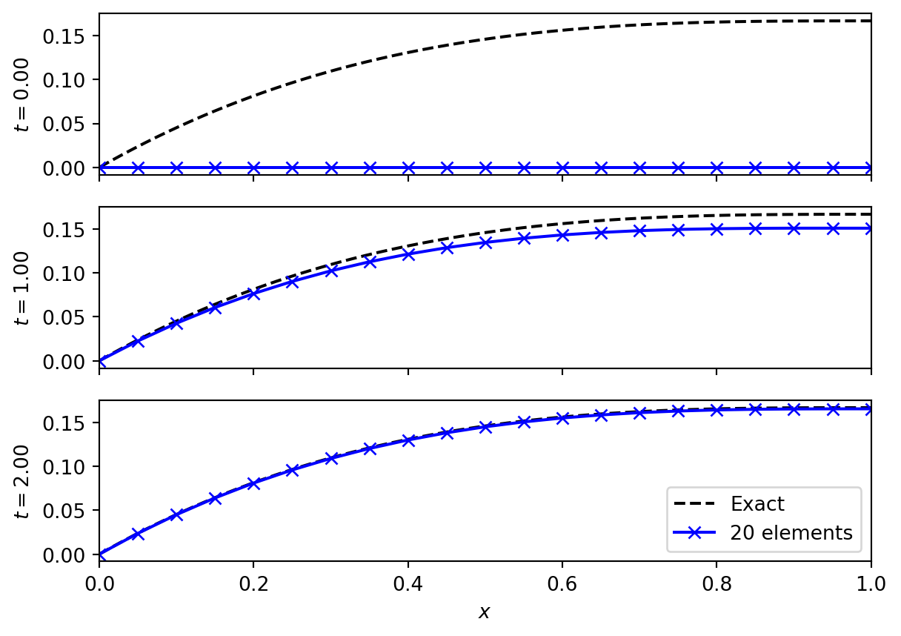
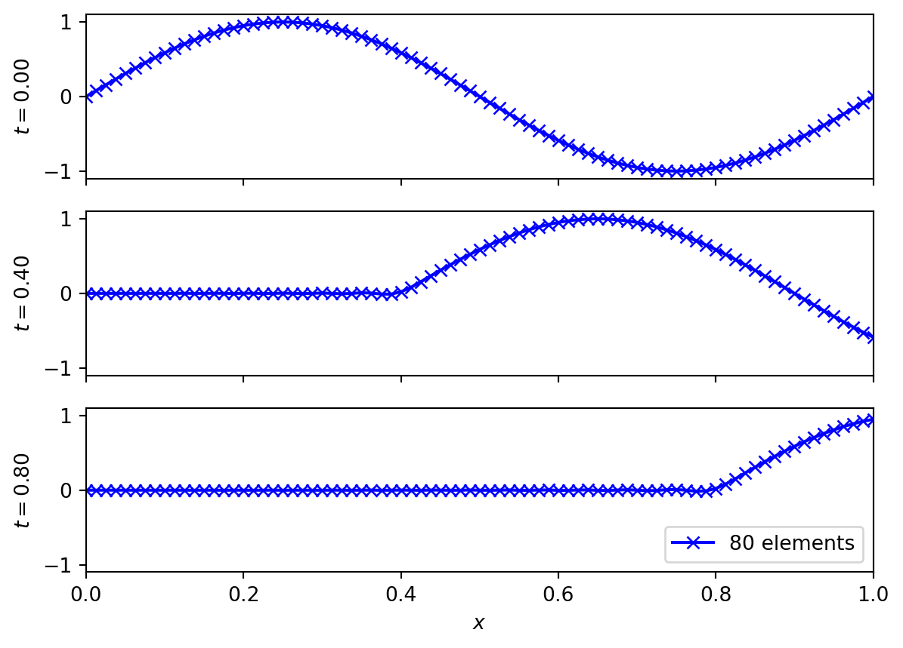
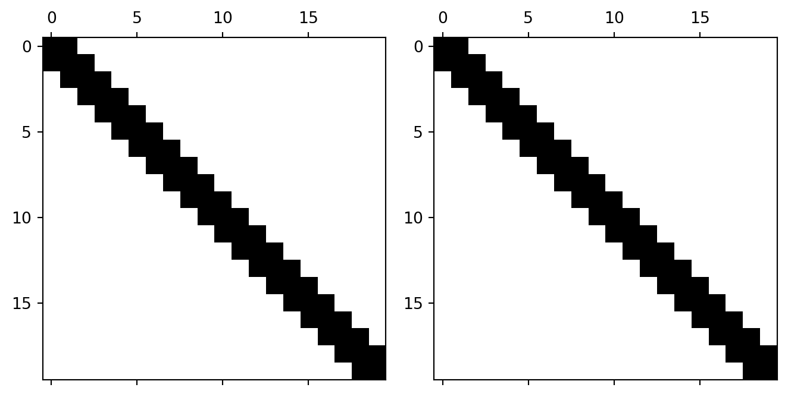

5 Time evolution
We now want to solve the full time dependent problem, (Equation 1.4),
\[ \frac{D \Psi}{D t} = \frac{\partial \Psi}{\partial t} + \mathbf{u} \cdot \nabla \Psi = S + \mu_{\Psi}\nabla^2 \Psi. \tag{5.1}\]
Again we will start by restricting to one dimension, giving
\[ \frac{D \Psi}{D t} = \underbrace{\frac{\partial \Psi}{\partial t}}_{\text{(1)}} + \underbrace{u \frac{\partial \Psi}{\partial x}}_{\text{(2)}} = \underbrace{S}_{\text{(3)}} + \underbrace{\mu_{\Psi} \frac{\partial^2 \Psi}{\partial x^2}}_{\text{(4)}} . \tag{5.2}\]
We remember that the respective terms are
- the time evolution of the pollution concentration,
- the advection of the pollution concentration by the wind,
- the source/sink of pollution,
- the diffusion of pollution concentration.
We will again use the domain \(x \in [0, 1]\) with the boundary conditions
\[ \Psi(0) = \alpha, \quad \partial_x \Psi |_{x=1} = \beta . \tag{5.3}\]
5.1 Weak form
We will repeat the key steps from the static case: introducing the weak form by multiplying by a test function and integrating over the domain, and representing all functions in terms of shape, or basis, functions. The key difference now is that the functions depend on time.
The continuum weak form of (Equation 5.2) is
\[ \begin{split} \underbrace{\int w \frac{\partial \Psi}{\partial t}}_{\text{(1)}} + \underbrace{u w(1) \Psi(1)}_{\text{(2a)}} - \underbrace{u \int \Psi \frac{\partial w}{\partial x}}_{\text{(2b)}} = \underbrace{\int w S}_{\text{(3)}} + \\ \underbrace{\mu_{\Psi} w(1) \beta}_{\text{(4a)}} - \underbrace{\mu_{\Psi} \int \frac{\partial w}{\partial x} \frac{\partial \Psi}{\partial x}}_{\text{(4b)}} . \end{split} \tag{5.4}\]
Note that we have used that the weighting function vanishes at the Dirichlet boundary, \(w(0) = 0\), and assumed that the test function \(w\) is time independent. We have integrated by parts again to move derivatives onto the test function, with the notation linking the boundary terms to their associated integrals.
To include time dependence we take the static case of (Equation 3.8), which was
\[ \Psi(x) = \sum_A \Psi_A N_A(x), \tag{5.5}\]
and generalise it so that \(\Psi_A \equiv \Psi_A(t)\). Now the nodal values \(\Psi_A\) contain the time dependence. The shape functions \(N_A\) remain time independent.
The weak form will now give us
\[ \begin{aligned} \text{(1)} & \to \sum_B w_B \sum_A \frac{\partial \Psi_A}{\partial_t} \int N_A N_B, \\ \text{(2a)} & \to u w(1) \Psi(1) , \\ \text{(2b)} & \to -u \sum_B w_B \sum_A \Psi_A \int N_A \frac{\partial N_B}{\partial x}, \\ \text{(3)} & \to \sum_B w_B \int N_B S, \\ \text{(4a)} & \to \mu_{\Psi} w(1) \beta, \\ \text{(4b)} & \to - \mu_{\Psi} \sum_B w_B \sum_A \Psi_A \int \frac{\partial N_A}{\partial x} \frac{\partial N_B}{\partial x} . \end{aligned} \tag{5.6}\]
As before, we gather together all of the terms with respect to the (arbitrary) coefficients of the test function \(w_B\). We also introduce the function \(q(x) = \alpha N_0(x)\) and write \(\Psi(x, t) = \psi(x, t) + q(x)\), to balance the Dirichlet boundary condition. This gives the matrix equation
\[ M_{AB} \frac{\partial \psi_A}{\partial t} + K_{AB} \psi_A = F_B, \tag{5.7}\]
where \(M\) is the mass or capacity matrix, and \(K\) is the stiffness matrix and \(\mathbf{F}\) the force vector as before. We read off the coefficients of the various terms using (Equation 5.6) as
\[ \begin{aligned} M_{ab} &= \int N_a N_b, \\ K_{ab} &= \mu_{\Psi} \int \frac{\partial N_a}{\partial x} \frac{\partial N_b}{\partial x} - u \int N_a \frac{\partial N_b}{\partial x}, \\ F_b &= \int N_b S - u \Psi_0 \delta^0_{B(b)} + \mu_{\Psi} \delta_{B(b)}^{N_\text{elements}} - q \delta^0_{B(b)} k^0_{12} . \end{aligned} \tag{5.8}\]
The terms are given with respect to the local element number \(\{a, b\}\) and are assembled into the global matrix in exactly the same way as before. The notation \(B(b)\) indicates the global node number computed from the local number, and is needed to identify the boundary locations.
5.2 Time stepping
The matrix equation (Equation 5.7) solves for \(\psi\) via evolving its nodal values \(\psi_A\) in time. This equation is semi-discrete: it is continuous in time, but discrete in space.
Semi-discrete approaches to PDEs are more general than finite element methods. They have the huge advantage that we end up solving ODEs, for which there is a vast literature, considerable analysis, and many well implemented and tested codes. They have the disadvantage that they are typically less efficient than bespoke, fully discrete methods with the same order of accuracy.
Here we give two simple methods that are often used in solving the time evolution of a semi-discrete problem. We write the system to be solved as
\[ \frac{\partial \mathbf{U}}{\partial t} = \symbf{\mathcal{F}} (\mathbf{U}) \tag{5.9}\]
where \(\mathbf{U}\) is the state vector. In the case of (Equation 5.7) the state vector is the coefficients \(\psi_A\) and the right-hand-side vector \(\symbf{\mathcal{F}}\) is
\[ \mathcal{F}_A = M^{-1}_{AB} \left( F_B - K_{AB} \psi_A \right). \tag{5.10}\]
Note that explicitly computing the matrix inverse is typically numerically inaccurate, and instead solving the linear system is preferred.
5.2.1 Euler
We denote the (known) state vector at time \(t^{(n)}\) and \(\mathbf{U}^n\). In Euler’s method we update to the unknown time \(t^{(n+1)} = t^{(n)} + \Delta t\) by
\[ \mathbf{U}^{n+1} = \mathbf{U}^n + \Delta t \, \symbf{\mathcal{F}} \left( \mathbf{U}^n \right). \tag{5.11}\]
This is exactly the result given by forward differencing in time, as seen (for example) in the derivation of FTCS. It is explicit, and gives first order accuracy in time.
5.2.2 RK2
Higher order methods can be constructed by updating in multiple stages. At each stage we compute the right hand side vector, and from that can approximate a solution at a time typically in \([t^{(n)}, t^{(n+1)}]\). By combining these stages appropriately a better approximation to the solution at the next timestep can be found. The Runge-Kutta family of methods is typical for this approach.
One particular subset of Runge-Kutta methods can ensure a form of total variation boundedness, linked to the TVD methods seen earlier. These Strict Stability Preserving (SSP) methods are preferred when dealing with semi-discrete PDE evolutions. The standard second order, explicit, SSP Runge-Kutta method (ESSPRK2) can be written
\[ \begin{aligned} \mathbf{U}^{[1]} &= \mathbf{U}^{n} + \Delta t \, \symbf{\mathcal{F}} \left( \mathbf{U}^n \right), \\ \mathbf{U}^{n+1} &= \tfrac{1}{2} \left\{ \mathbf{U}^{n} + \mathbf{U}^{[1]} + \Delta t \, \symbf{\mathcal{F}} \left( \mathbf{U}^{[1]} \right) \right\} . \end{aligned} \tag{5.12}\]
5.3 Evolving to steady state
Let us take the simplified problem from (Chapter 3), where
\[ S = 1 - x, \quad \mu = 1. \tag{5.13}\]
We know the steady state solution is \(x (x^2 - 3 x + 3) / 6\). However, we can start from the solution \(x = 0\) and see how it evolves towards steady state. For this we will use Euler timestepping.
5.4 Advection dominated flow
Let us now look at the advection problem from setting \(S(x) = 0 = \mu_\Psi\). The advection equation results and we have, from (Equation 5.8) that
\[ \begin{aligned} M_{ab} &= \int N_a N_b, \\ K_{ab} &= - u \int N_a \frac{\partial N_b}{\partial x}, \\ F_b &= - u \Psi_0 \delta^0_{B(b)} - q \delta^0_{B(b)} k^0_{12} . \end{aligned} \tag{5.14}\]
The results are seen in (Figure 5.2) where the expected advective behaviour is seen. Note that the boundary conditions are built into the scheme here, through their appearance in the force vector. Changing boundary conditions will require modifying the scheme.

5.5 Matrix structure
The properties of the finite element method is closely tied to the properties of the matrices involved.

In (Figure 5.3) we see the structure of the mass and stiffness matrices for the one dimensional advection-diffusion problem. The matrices are symmetric and sparse - in this case they are tridiagonal. In higher dimensions, or with more complex boundary conditions, or with more complex systems of equations, the matrices become messier. However, the key point of matrix sparsity will be retained.
The symmetry of the mass matrix is useful in proving invertibility (essential for the method to work). The symmetry of the stiffness matrix is useful for constructing the eigenvalues of the discrete system, which are linked to the amplification rates in a von Neumann stability analysis.
The sparsity of the matrices is crucial in implementing a method that scales to large numbers of elements. In the simplest one dimensional implementation the size of the matrices scales as \(N_{\text{elements}}^2\). However, the tridiagonal nature means that the amount of useful (non-zero) information scales as \(N_{\text{elements}}\). The computational memory and work saved is substantial even with only tens of elements. In higher dimensions with large domains (millions of elements) the construction of the full matrix is impractical.